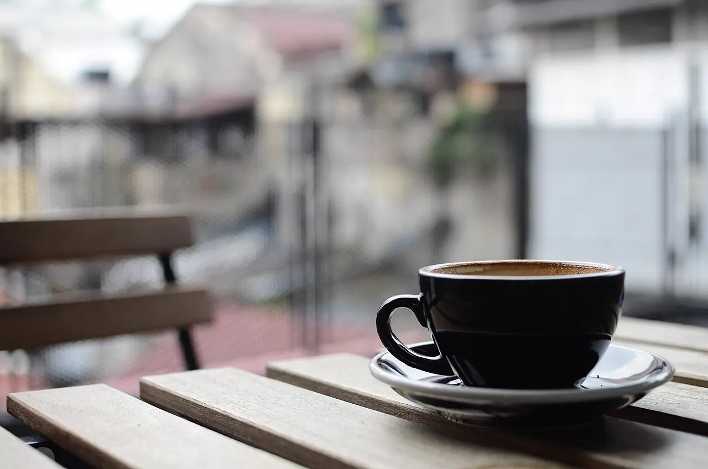

Будни с 7:30
Coffe Bay на улице Генерала Белова
Открываемся в 7:30 — раньше, чем большинство кофеен вокруг. Кофе с собой за пару минут.
Адрес и часы работы
улица Генерала Белова. Заходите выпить на месте или возьмите с собой.
- Пн–Пт
- 7:30–20:00
- Сб–Вс
- 9:00–21:00
- Где
- улица Генерала Белова

В 7:30 кофе уже готов.
Закажите заранее — заберёте без очереди по дороге к метро.


Предзаказ без очереди
Утром каждая минута на счету — закажите заранее.
Напишите заказ
В WhatsApp: что и к какому времени.
Мы подтвердим
Ответим за пару минут и скажем, когда будет готово.
Заберите без очереди
Назовите имя на кассе — заказ уже ждёт.